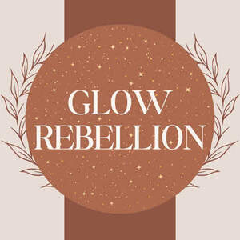

Trade Mark Journal No.2025/051 19 December 2025
UK00004304623 3 December 2025 (3,4,35)

- Class 3
- Beauty balm creams; Scented body lotions and creams; After-sun oils [cosmetics]; Blemish balm creams; Skin balms [cosmetic]; Moisturising skin lotions [cosmetic]; Shaving balms; Shaving balm; Moisturising creams, lotions and gels; Skin balms (Non-medicated -); Non-medicated skin balms; Hair balm; Cosmetic sun milk lotions; Hair balms; Aloe soaps; Lip balms; Aloe soap; Lip balm [non-medicated]; Lip balm; After-shave balms; Suntan lotion [cosmetics]; Skin cleansing lotion; Non-medicated balm for hair; Moisturising body lotion [cosmetic]; Skin lotion; Aromatherapy lotions; Massage oils and lotions; Aftershave balms; Scented body lotions; Lip balms [non-medicated]; Non-medicated lip balms; After-sun lotions; Scented body creams; After-sun milk [cosmetics]; Skin lotions; Lotions for the skin; After-sun lotions [for cosmetic use]; Sunscreen lotions; Moisturizing body lotions; Aftershave balm; Moisturising skin creams [cosmetic]; Cleansing lotions; Cream soaps; Moisturizing creams; Almond soaps; Skin moisturizers used as cosmetics; Scented soaps; Aromatherapy creams; Shaving lotion; Cleansing balm; Suntan oils [cosmetics]; Shaving lotions; Scented oils; After-sun milks [cosmetics]; Milky lotions for skin care; Skin cleansing cream [non-medicated]; Cosmetic nourishing creams; Facial lotion; Non-medicated skin lotions; Cosmetic creams and lotions; Aftershave moisturising cream; Suncare lotions [for cosmetic use]; Hair lotion; Sunscreen creams [for cosmetic use]; Suncare lotions; Moisturisers [cosmetics]; Shave balm; Perfumed oils for skin care; Skin soap; Bath lotion; Moisturising creams; Facial lotions; Beauty lotions; After-shave lotions; Sunscreen creams; Skin moisturizer masks; Moist wipes impregnated with a cosmetic lotion; Anti-aging moisturizers used as cosmetics; Lavender oil for cosmetic use; Facial creams [cosmetics]; Hydrating creams for cosmetic use; Almond soap; Cosmetics in the form of lotions; Cosmetic sun oils; Cosmetic suntan lotions; Skin cleansing cream; Moisturising gels [cosmetic]; Skin recovery creams [cosmetics]; Body cream soap; Cosmetic hair lotions; Soap (Deodorant -); Eucalyptus oil for cosmetic use; Deodorant soap; Sun-tanning creams and lotions; Depilatory lotions; Beard balm; Hair lotions; Sun-block lotions; Hand lotion (Non-medicated -); Aftershave lotions; Skin care lotions [cosmetic]; Skin moisturizer; Non-medicated hair lotions; After-sun creams; Lip cosmetics; After-sun milk for cosmetic use; Skin moisturizers; Facial lotions [cosmetic]; Cosmetic facial lotions; Cosmetic massage creams; Exfoliating creams; Exfoliant creams; Skin moisturisers; Cleansing creams [cosmetic]; Cosmetic creams for dry skin; Skin moisturiser; Perfumed creams; Sun care lotions [for cosmetic use]; Pre-shave creams; Body and facial creams [cosmetics]; Suntan lotions; Mattifying gel cream; Moist paper hand towels impregnated with a cosmetic lotion; Hair protection lotions; Citronella oil for cosmetic use; Balms (Non-medicated -); Lotions (Tissues impregnated with cosmetic -); Tissues impregnated with cosmetic lotions.
- Class 4
- Aromatherapy fragrance candles; Mineral oil for use in the manufacture of cosmetics and skin care products.
- Class 35
- Marketing research in the fields of cosmetics, perfumery and beauty products.
Natasha Spratley
Michael Braund